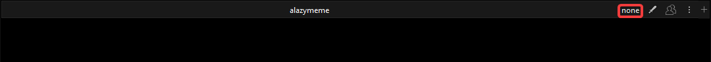
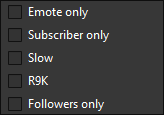
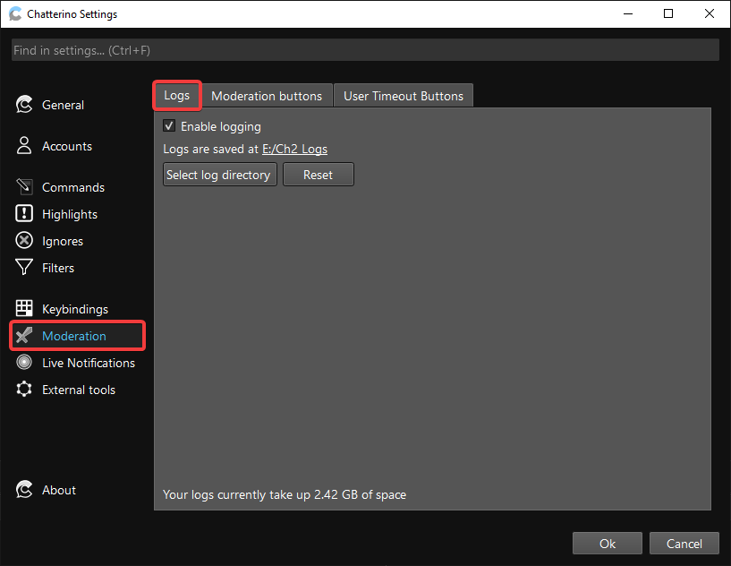
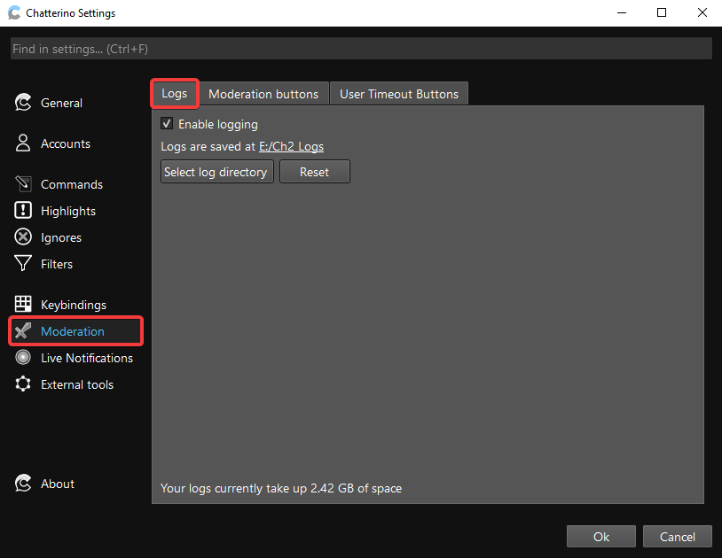
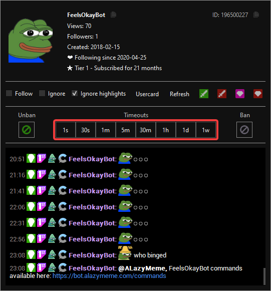

Moderation
Chatterino contains a slew of features to assist moderators in moderating.
Chat Mode¶
You can easily change the chat modes in Chatterino using the button on the streamer bar.

You can choose from: Emote only, Subscriber only, Slow mode, R9K mode and Followers only mode.

Logging¶
Moderators are able to log all the channels they are in using the logging feature.

Moderation Mode¶
Moderation mode is enabled by clicking  in a channel that you moderate. Available variables are
in a channel that you moderate. Available variables are {user}, {msg-id} & {channel}. Below is a list of examples that can be used:
| Function | Action |
|---|---|
| Ban a user | /ban {user} |
| Unban a user | /unban {user} |
| Timeout a user | /timeout {user} 600 |
| Delete a user's message | /delete {msg-id} |
| pajbot2 report | /w botname #{channel} !report {user} being rude |
| pajbot2 longreport | /w botname #{channel} !longreport {user} being very rude |
| Open the user's usercard | /user {user} |
User Timeout Buttons¶
User timeout buttons are very useful while looking at a user's logs. All 8 buttons can be configured to various timeout lengths:

User timeout buttons look like this:

Last update: June 8, 2021 12:18:24